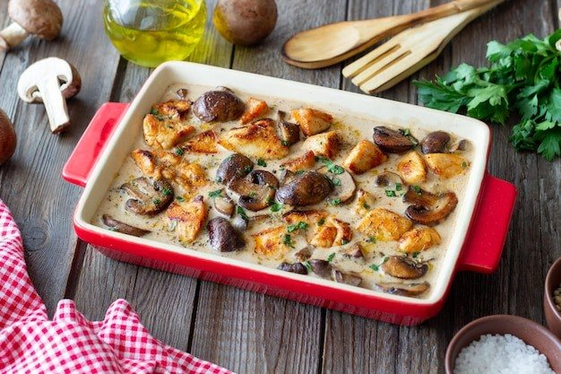

Massas
Molho parisiense

Ingredientes
- 5 colheres (sopa) de manteiga
- 1 xícara de cogumelos frescos em fatias
- 2 xícaras de sobras de frango cozido e desfiado
- ½ xícara de presunto picado
- 3 colheres (sopa) de farinha de trigo
- 3 xícaras de leite
- 2 colheres (sopa) de parmesão
- Sal, pimenta-do-reino e noz-moscada a gosto
- ½ xícara de creme de leite
Modo de preparo
- Numa frigideira, aqueça 3 colheres (sopa) de manteiga. Doure os cogumelos e acrescente o frango desfiado. Por último, adicione o presunto picado. Reserve.
- Numa panela, aqueça a manteiga restante e junte a farinha de trigo. Misture até formar uma bola. Cozinhe por mais 3 minutos, até dourar a farinha.
- Retire a panela do fogo e acrescente o leite, aos poucos, mexendo sempre para não empelotar.
- Volte ao fogo e continue mexendo até o molho ficar encorpado (cerca de 10 minutos).
- Adicione o queijo parmesão ralado e a mistura de cogumelos, frango e presunto. Tempere com sal, pimenta-do-reino e noz-moscada a gosto. Deixe esfriar completamente e congele.
Observação
Para evitar que o molho desande, não deixe ferver depois de colocar o creme de leite. Congelamento: coloque o molho em um recipiente rígido que possa ir ao freezer, ou em potes de polietileno; retire o ar, vede bem, etiquete e leve ao freezer (ou congele direto em saco plástico, retirando o ar). Descongelamento: na geladeira de um dia para o outro, ou numa panela em fogo brando, em banho-maria, até descongelar; junte o creme de leite mexendo bem até aquecer, sem deixar ferver. Verifique o tempero e sirva.